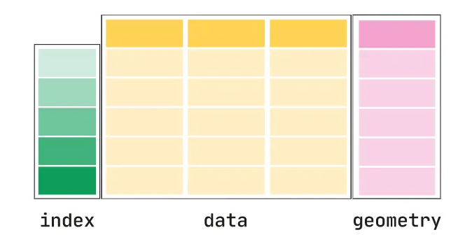
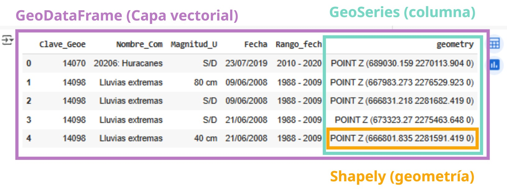

🔹 Sesión 3#
En esta sesión trabajaremos con la biblioteca geopandas, que nos permite trabajar con datos geoespaciales en Python. Aprenderemos a leer, escribir y manipular datos geoespaciales, así como a realizar análisis espaciales y visualizaciones.
Descarga de datos
Para poder continuar con los ejercicios de esta sesión, asegúrate de descargar los archivos de datos que encontrarás al final de esta página.
Por favor, hazlo ahora, para no perder mucho tiempo cuando comencemos con el cuaderno de trabajo 🙂.
Introducción#
En la sesión anterior cubrimos los fundamentos de trabajar con geometrías individuales. Ahora pasaremos al tema principal de este curso: trabajar con capas vectoriales.
Geopandas es la biblioteca específica para trabajar con datos geoespaciales en Python. Geopandas combina las capacidades de pandas para el manejo de datos tabulares con las capacidades de shapely para el manejo de geometrías. Esto nos permite trabajar con datos geoespaciales de manera similar a como lo haríamos con un DataFrame de pandas.

Figura 3.1. Estructura de un GeoDataFrame (Fuente: Geopandas)
Las estrucutras de datos de geopandas son:
GeoSeries: una serie de geometrías, similar a una columna de unDataFramedepandas.GeoDataFrame: unDataFramedepandasque contiene una columna de geometry. Es la estructura principal para trabajar con datos geoespaciales engeopandas.

Figura 3.2. Estructura de un GeoDataFrame en un entorno de Jupyter Notebook (Fuente: Elaboración propia.)
Sistema de Coordenadas de Referencia (CRS)#
Un CRS (Sistema de Coordenadas de Referencia) es esencial para ubicar datos geográficos correctamente en el espacio. Sin un CRS, los datos no “saben” dónde están.
¿Cómo representamos la Tierra?#
La Tierra no es perfectamente redonda: es irregular. Para ubicar cosas sobre ella, usamos un modelo matemático llamado datum.
Datum = Modelo matemático que representa la forma y tamaño de la Tierra.
🔸 Ejemplos de datum:#
WGS84: el más común, usado por el GPS.
ITRF2008: muy preciso, usado en geodesia y estudios de movimiento tectónico.
¿Qué es una proyección?#
Una proyección cartográfica convierte coordenadas sobre la superficie curva de la Tierra a un plano.
Cada proyección prioriza diferentes aspectos: área, forma, distancia o dirección.
🔸 Ejemplos de proyección:#
Mercator: conserva formas, pero exagera tamaños cerca de los polos.
UTM: divide el mundo en zonas para minimizar distorsión regional.
¿Qué es UTM?#
UTM (Universal Transverse Mercator) es un sistema de proyección que divide la Tierra en zonas numeradas.
📌 Piensa en columnas verticales sobre el globo. Cada una tiene su propio sistema de coordenadas en metros.
México usa comúnmente las zonas 13N y 14N.
Las coordenadas están en metros, no en grados.
¿Qué es un código EPSG?#
EPSG es un código numérico estandarizado que identifica un sistema de coordenadas completo: datum + proyección + unidad + zona.
📌 Como si cada mapa tuviera un número de serie o “ID”.
Tabla: Sistemas de Coordenadas de Referencia (CRS) comunes en México
Nombre |
Tipo |
Unidades |
Código EPSG |
|---|---|---|---|
Geográfico |
Grados decimales (°) |
4326 |
|
Proyectado |
Metros (m) |
32611 |
|
Proyectado |
Metros (m) |
32612 |
|
Proyectado |
Metros (m) |
32613 |
|
Proyectado |
Metros (m) |
32614 |
|
Proyectado |
Metros (m) |
32615 |
|
Proyectado |
Metros (m) |
32616 |
Los CRS geográficos abarcan toda la superficie terrestre y utilizan coordenadas angulares (grados), mientras que los CRS proyectados representan áreas más pequeñas con coordenadas en unidades lineales (metros), lo que permite realizar cálculos geométricos como distancias y áreas.
¿Qué es el ITRF?#
ITRF (International Terrestrial Reference Frame) es un marco de referencia muy preciso usado en geodesia.
🛰 Incluye modelos de movimiento de placas tectónicas, por eso también considera el tiempo.
ITRF2008 o ITRF2014 se usan cuando se necesita gran exactitud espacial y temporal.
Ejemplo reales de CRS en herramientas geoespaciales#
Los Sistemas de Coordenadas de Referencia (CRS) no son solo una teoría: están en plataformas que usamos todos los días, desde tu GPS hasta Google Maps. Aquí te mostramos cómo se aplican en la práctica:
🛰️ GPS#
CRS:
EPSG:4326(WGS84)Coordenadas en grados decimales (latitud, longitud)
Usado por: dispositivos GPS, teléfonos móviles, drones
📍 Ejemplo:
20.6235, -103.4376 (latitud, longitud)
Google Maps#
CRS:
EPSG:3857(Web Mercator)Coordenadas proyectadas en metros
Proyección basada en WGS84, ideal para navegación web
📍 Transformación interna:
Un punto como 20.6235, -103.4376 se transforma a coordenadas planas (x, y) para ser mostrado sobre un mapa interactivo.
OpenStreetMap (OSM)#
CRS:
EPSG:3857(igual que Google Maps)Usado por: aplicaciones como Leaflet, Mapbox, QGIS base layers
Muy utilizado para mapas web interactivos
Mapas Web (Leaflet, Mapbox, etc.)#
CRS:
EPSG:3857Compatible con servicios de teselas (tile servers)
Traducen automáticamente las coordenadas para las personas usuarias
¡Atención al orden de coordenadas!
Cuando copies coordenadas desde Google Maps u otras fuentes, recuerda que el orden es latitud, longitud (Y, X).
Sin embargo, al crear geometrías con shapely, debes invertir ese orden y usar Point(X, Y) → es decir:
from shapely.geometry import Point
# Coordenadas de Google Maps:
# lat = 20.62435
# lon = -103.42748
punto = Point(-103.42748, 20.62435) # Point(longitud, latitud)
Datos#
Descarga para Geopandas#
Para esta sesión utilizaremos un conjunto de datos de Información Sociodemográfica por colonia, Jalisco 2020. Colonias INE 2024 (Colonias Enteras) proveniente del Instituto de Información Estadística y Geográfica de Jalisco (IIEG).
Los datos están disponibles para su descarga en el siguiente enlace:
Formato: shapefile (zip)
Descarga para CRS#
Para este ejercicio utilizaremos un conjunto de datos de países del mundo en formato shapefile proveniente de Natural Earth. Este conjunto de datos contiene información geoespacial sobre los límites políticos de los países.
Formato: shapefile (zip)
También utilizaremos un conjunto de datos del Instituto Nacional de Estadística y Geografía (INEGI) de México, que contiene información geoespacial sobre el Marco Geoestadístico de México. Este conjunto de datos contiene información sobre los límites políticos y geográficos de México.
Formato: shapefile
¡OJO! –> Sólo descarga el
SHPllamadoMarco Geoestadístico Integrado 2024(al final del listado de SHPs).
Contenidos de esta sesión#
En esta sesión estaremos trabajando con este cuaderno para trabajar con GeoPandas:

También veremos algunos ejemplos para trabajar el Sistema de Coordenadas de Referencia (CRS)

Créditos de la visualización: @jasondavies
En este cuaderno trabajaremos con el CRS de datos geoespaciales:

Recursos adicionales en los que te puedes apoyar para aprender más sobre el tema de CRS: